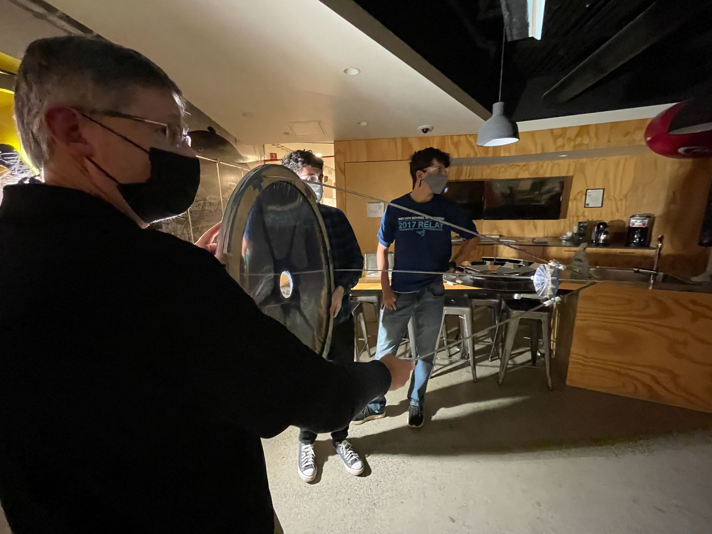
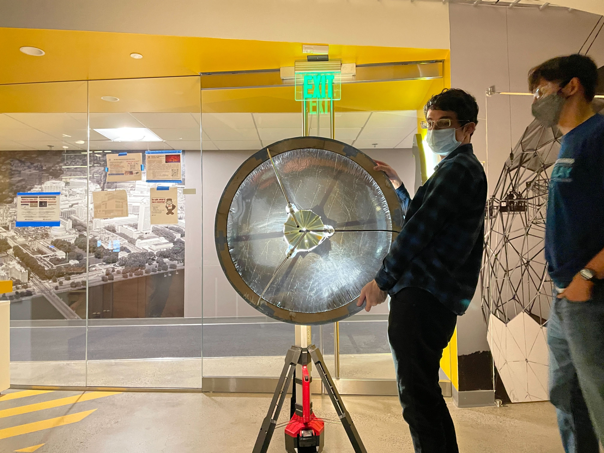
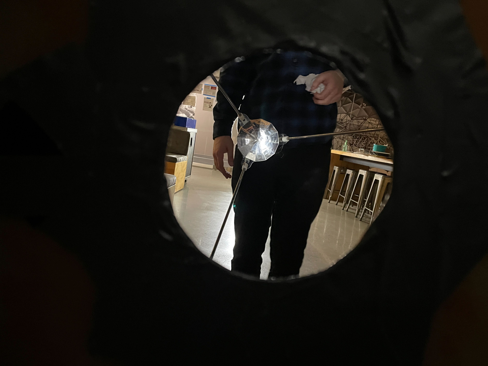

<topbar style="display:none;">
<item><a href="../index.html">Home</a></item>
<item><a href="../about.html">About</a></item>
</topbar>
<!-- This is a comment, it is ignored by the compiler/interpreter -->
# Week 12
<div></div>
## Overview
<div></div>
This was the final week. We were unfortunately unable to fully assemble a working solar cooker, but we assembled and mounted the secondary reflector to the pressure-formed parabolic heater and tested for optical properties. The secondary reflector was attached to the parabolic reflector by cutting out a base plate with holes for three steel rods and threading them through. The rods were attached to the base of the reflector dish by screws, and tight sliding washers were placed on the rods to adjust position of the secondary reflector.

We attempted to evaluate the quality of the reflector on the last day, but unfortunately were unable to get any performance out of the secondary reflector. Adjustment of the secondary reflector distance and position was enough to create a circle of focused light incident on it from the main reflector, but no collimated beam of light was observed exiting through the hole in the center of the reflector.

Shown below, light is somewhat visible as a focused patch on the secondary reflector. Despite the somewhat bright appearance in the photo, the light should be much brighter (this should be bright enough to cook things in sunlight!).

Overall, we constructed a decent first prototype which proved the method of pressure forming reflectors worked well enough to focus light onto a region the correct size for our secondary reflector, but either the primary reflector is not parabolic enough (too much aberration) or the secondary reflector is not shaped properly and reflective enough. In order to determine where the primary source of error is, the next prototype should include a precision manufactured secondary reflector that we can trust to function properly and thus rule out the primary reflector as our issue. We also did not have enough time to finish the fresnel reflector, and the higher quality of reflector surface on that could also improve efficiency and lead to higher energy on the secondary reflector.